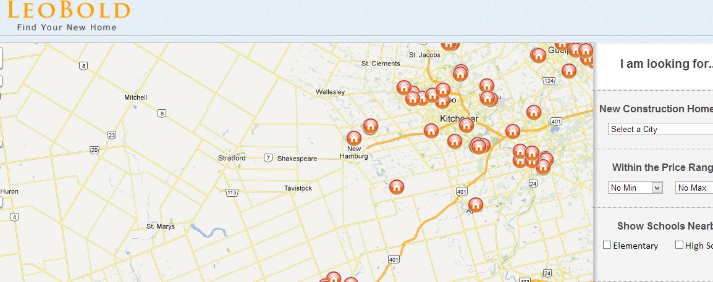

Portfilio Site

My web portfolio created for my Advanced Web Programming class. The site was created with HTML5, CSS3 and a bit of jQuery. The image slider on the homepage comes from here
LeoBold.ca
I created LeoBold.ca for a startup company I did my co-op with. I'm currently working on the 3rd version of the site and plan to have it up by the end of February. The current version doesn't take full advantage of HTML5 and CSS3 but they will be used in the newest version. LeoBold.ca is a real estate website for helping people find new construction homes by providing detailed neighbourhood and amenity information. The site is built around the google maps api with a C# backend. You can visit the site Here.